Vignette for tradeSeq: trajectory differential expression analysis for Sequncing data
Koen Van den Berge and Hector Roux de Bézieux
9/10/2018
tradeSeq.RmdIn this vignette, we analyse a subset of the data from (Paul et al. 2015). A SingleCellExperiment object of the data has been provided with the tradeSeq package and can be retrieved with data(se). The data and UMAP reduced dimensions were derived from following the Monocle 3 vignette.
Load data
suppressPackageStartupMessages({
library(SingleCellExperiment)
library(mgcv)
library(tradeSeq)
library(slingshot)
library(RColorBrewer)
library(dplyr)
library(ggplot2)
library(tidyr)
library(cowplot)
})
palette(brewer.pal(8,"Dark2"))
data(se, package = "tradeSeq")
se## class: SingleCellExperiment
## dim: 3004 2660
## metadata(0):
## assays(1): counts
## rownames(3004): 0610007L01Rik 0610009O20Rik ... Zzef1 rp9
## rowData names(1): gene_short_name
## colnames(2660): W31105 W31106 ... W39167 W39168
## colData names(22): Seq_batch_ID Amp_batch_ID ... no_expression
## louvain_component
## reducedDimNames(1): UMAP
## spikeNames(0):Fit trajectories using slingshot
We will fit developmental trajectories using the slingshot package (Street et al. 2018). slingshot requires cluster labels as input, and fits trajectories in reduced dimension. We will use the reduced space calculated with the UMAP method, which is pre-calculated in the se object. We cluster the data using k-means with \(7\) clusters. Since we know which cells are the progenitor cell type, we define the starting point for the trajectories as input for slingshot. Note that this argument is optional, and not required to run slingshot.
set.seed(97)
rd <- reducedDims(se)$UMAP
cl <- kmeans(rd, centers = 7)$cluster
plot(rd, col = brewer.pal(9, "Set1")[cl], pch = 16, asp = 1,
cex = 2/3)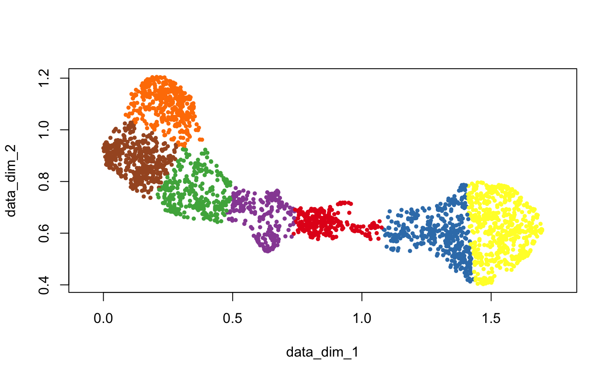
library(slingshot)
lin <- getLineages(rd, clusterLabels = cl, start.clus = 4)## Using full covariance matrixcrv <- getCurves(lin)We find two lineages for this dataset. The trajectory can be visualized using the plotGeneCount function, using either the cluster labels or cell type to color the cells.
plotGeneCount(rd = rd, curve = crv, counts = counts, clusters = cl)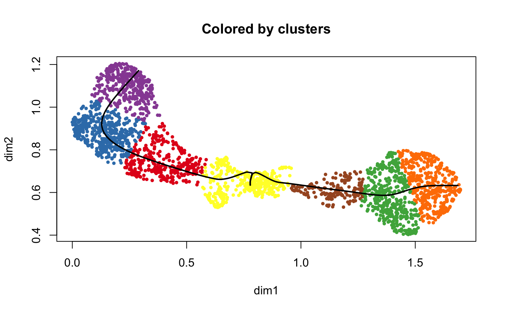
celltype <- factor(colData(se)$cell_type2)
plotGeneCount(rd = rd, curve = crv, counts = counts, clusters = celltype,
title="Colored by cell type")
legend("topright", levels(celltype),
col = brewer.pal(9, "Set1")[1:nlevels(celltype)],
pch = 16, cex = 1 / 2, bty = "n")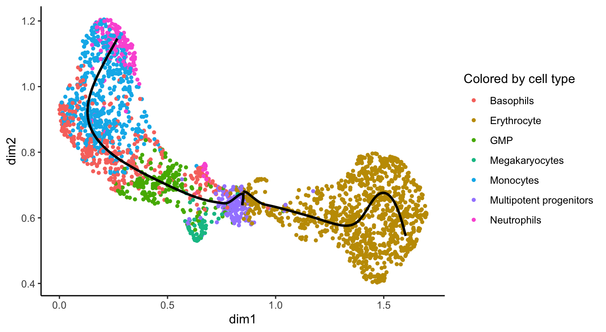
Fit additive models
After estimating the trajectory, we can fit generalized additive models (GAMs) with the tradeSeq package. Internally, this package builds on the mgcv package by fitting additive models using the gam function. The core function from tradeSeq, fitGAM, will use cubic splines as basis functions, and it tries to ensure that every lineage will end at a knot point of a smoother. By default, we allow for \(10\) knots for every lineage, but this can be changed with the nknots function. More knots will allow more flexibility, but also increase the risk of overfitting. By default, the GAM model estimates one smoother for every lineage using the negative binomial distribution. If you want to allow for other fixed effects (e.g. batch effects), then an additional model matrix can be provided with the U argument.
We use the effective library size, estimated with TMM (M. D. Robinson and Oshlack 2010), as offset in the model. We allow for alternatives by allowing a user-defined offset with the offset argument.
This dataset consists of UMI counts, and we do not expect zero inflation to be a big problem. However, we also allow to fit zero inflated negative binomial (ZINB) GAMs by providing observation-level weights to fitGAM using the weights argument. The weights must correspond to the posterior probability that a count belongs to the count component of the ZINB distribution (Van den Berge et al. 2018).
For the vignette, we fit smoothers for a filtered set of genes in the dataset, 239 genes in total. We also include the Irf8 gene, since it is a known transcription factor involved in hematopoiesis.
The progress of the fitting can be trackes using a progress bar by setting the verbose argument to TRUE.
counts <- assays(se)$counts %>% as.matrix()
filt <- rowSums(counts > 8) > ncol(counts)/100
filt["Irf8"] <- TRUE
counts <- counts[filt, ]
gamList <- fitGAM(counts = counts,
pseudotime = slingPseudotime(crv, na = FALSE),
cellWeights = slingCurveWeights(crv),
verbose = FALSE)
# This takes about 1mn to runOne may explore the results of a model by requesting its summary.
summary(gamList[["Irf8"]])##
## Family: Negative Binomial(2.32)
## Link function: log
##
## Formula:
## y ~ -1 + U + s(t1, by = l1, bs = "cr", id = 1, k = nknots) +
## s(t2, by = l2, bs = "cr", id = 1, k = nknots) + offset(offset)
##
## Parametric coefficients:
## Estimate Std. Error z value Pr(>|z|)
## U -10.0039 0.5687 -17.59 <2e-16 ***
## ---
## Signif. codes: 0 '***' 0.001 '**' 0.01 '*' 0.05 '.' 0.1 ' ' 1
##
## Approximate significance of smooth terms:
## edf Ref.df Chi.sq p-value
## s(t1):l1 8.555 9.477 624.177 <2e-16 ***
## s(t2):l2 4.403 5.240 6.489 0.261
## ---
## Signif. codes: 0 '***' 0.001 '**' 0.01 '*' 0.05 '.' 0.1 ' ' 1
##
## Rank: 20/21
## R-sq.(adj) = 0.54 Deviance explained = 65%
## -REML = 2014.3 Scale est. = 1 n = 2660You can also plot the cells in reduced dimension to see where the knots are located.
plotGeneCount(rd = rd, curve = crv, counts = counts, clusters = cl,
models = gamList)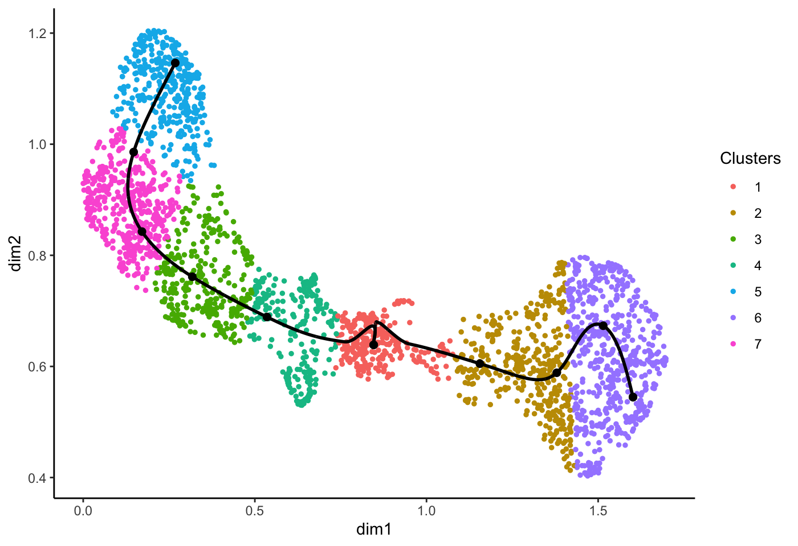
Within-lineage comparisons
Association of gene expression with pseudotime
A first exploration of the data analysis may consist in checking whether gene expression is associated with a particular lineage. The statistical test performed here, implemented in the associationTest function, is testing the null hypothesis that all smoother coefficients are equal to each other. This can be interpreted as testing whether the smoothed gene expression is significantly changing along pseudotime.
assoRes <- associationTest(gamList)Related, one can extract the p-values generated by the mgcv package using the getSmootherPvalues function. These p-values are derived from a test that assesses the null hypothesis that all smoother coefficients are equal to zero. Note, however, that their interpretation is thus more complex. A significant lineage for a particular gene might thus be the result of (a) a different mean expression in that lineage as compared to the overall expression of that gene, or (b) significantly varying expression along that lineage, even if the means are equal, or (c) a combination of both. This function extracts the p-values calculated by mgcv from the GAM, and will return NA for genes that we were unable to fit properly. Similarly, the test statistics may be extracted with getSmootherTestStats. Since this dataset was pre-filtered to only contain relevant genes, all p-values (test statistics) will be very low (high).
pvalLineage <- getSmootherPvalues(gamList)
statLineage <- getSmootherTestStats(gamList)Discovering progenitor marker genes
In order to discover marker genes of the progenitor cell population, researchers may be interested in assessing differential expression between the progenitor cell population (i.e., the starting point of a lineage) with the differentiated cell type population (i.e., the end point of a lineage). In the function startVsEndTest, we have implemented a Wald test that tests the null hypothesis that the expression at the starting point of the smoother (progenitor population) is identical to the expression at the end point of the smoother (differentiated population). The test basically involves a comparison between two smoother coefficients for every lineage. The function startVsEndTest performs an omnibus test across all lineages by default, but you can also assess all lienages separately by setting lineages=TRUE. Below, we adopt an omnibus test across the two lineages.
startRes <- startVsEndTest(gamList)We can visualize the estimated smoothers for the most significant gene.
oStart <- order(startRes$waldStat, decreasing = TRUE)
sigGeneStart <- names(gamList)[oStart[1]]
plotSmoothers(gamList[[sigGeneStart]])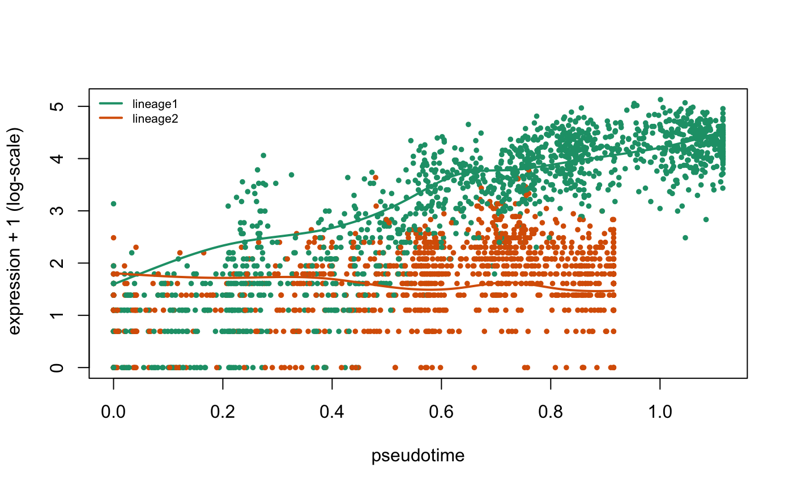
Alternatively, we can color the cells in UMAP space with that gene’s expression.
plotGeneCount(rd, crv, counts, gene = sigGeneStart)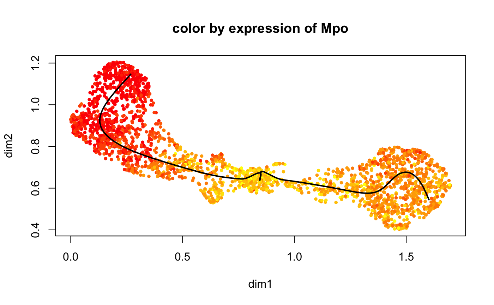
Between-lineage comparisons
Discovering differentiated cell type markers
tradeSeq can discover marker genes for the differentiated cell types by comparing the end points of the lineage-specific smoothers. This is implemented in the diffEndTest function. By default, diffEndTest performs an omnibus test, testing the null hypothesis that the endpoint expression is equal for all lineages using a multivariate Wald test. If more than two trajectories are present, one can assess all pairwise comparisons using the pairwise=TRUE argument.
endRes <- diffEndTest(gamList)We can plot the most significant gene using the plotSmoothers function.
o <- order(endRes$waldStat, decreasing = TRUE)
sigGene <- names(gamList)[o[2]]
plotSmoothers(gamList[[sigGene]])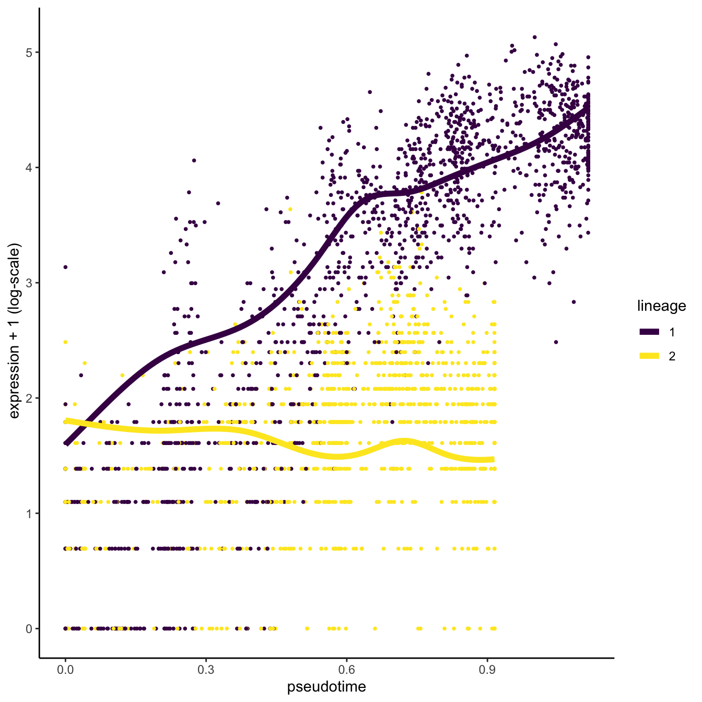
Alternatively, we can color the cells in UMAP space with that gene’s expression.
plotGeneCount(rd, crv, counts, gene = sigGene)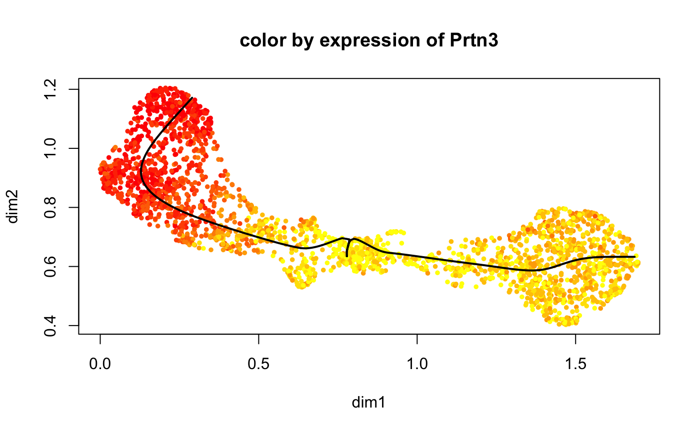
Discovering genes with different expression patterns
Asides from testing at the level of the differentiated cell type, researchers may be interested in assessing the expression pattern of a gene over pseudotime. The function patternTest implements a statistical method that checks whether the smoothed gene expression is equal along pseudotime between two or multiple lineages. In practice, we use \(100\) points, equally distributed along pseudotime, that are compared between two (or multiple) lineages, and this number can be changed using the nPoints argument.
patternRes <- patternTest(gamList)
oPat <- order(patternRes$waldStat, decreasing = TRUE)
head(rownames(patternRes)[oPat])## [1] "Mpo" "Prtn3" "Car2" "Ctsg" "Elane" "H2afy"plotSmoothers(gamList[[rownames(patternRes)[oPat][1]]])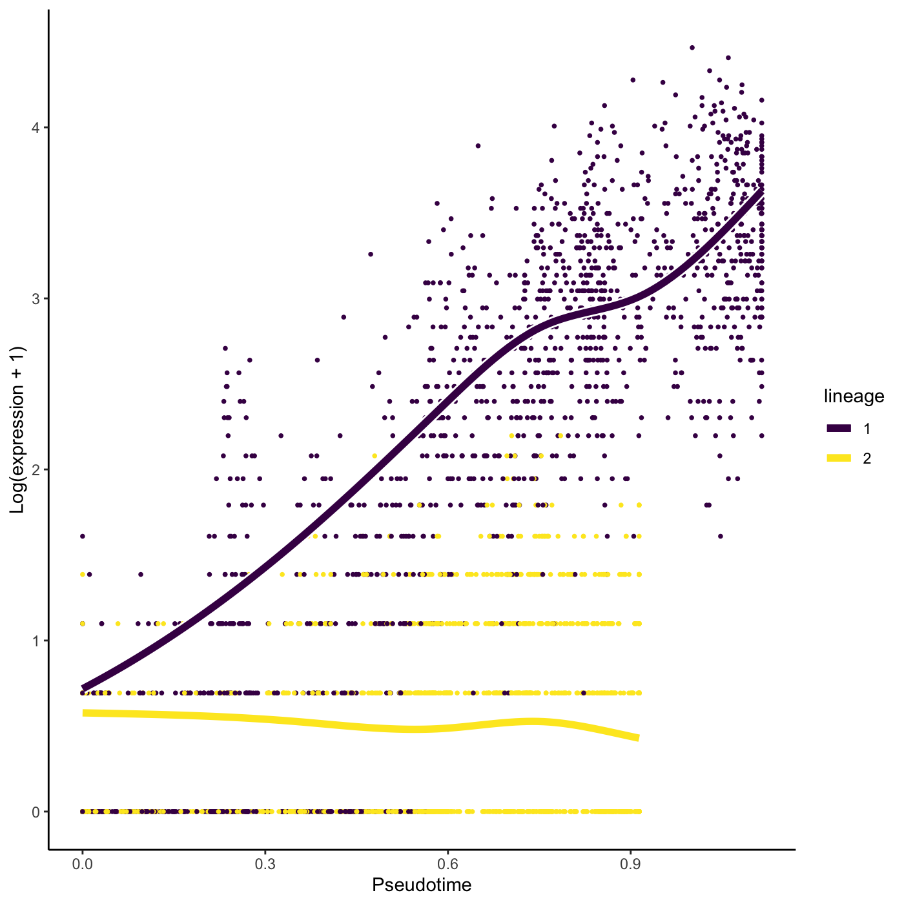
plotGeneCount(rd, crv, counts, gene = rownames(patternRes)[oPat][1])
We find genes at the top that are also ranked as DE for the differentiated cell type. What is especially interesting are genes that have different expression patterns but no different expression at the differentiated cell type level. We therefore sort the genes according to the sum of square of their rank in increasing Wald statistics for the patternTest and their rank in decreasing Wald statistics for the diffEndTest.
compare <- inner_join(patternRes %>% mutate(Gene = rownames(patternRes),
pattern = waldStat) %>%
select(Gene, pattern),
endRes %>% mutate(Gene = rownames(endRes),
end = waldStat) %>%
select(Gene, end),
by = c("Gene" = "Gene")) %>%
mutate(transientScore = (min_rank(desc(end)))^2 +
(dense_rank(pattern))^2)
ggplot(compare, aes(x = log(pattern), y = log(end))) +
geom_point(aes(col = transientScore)) +
labs(x = "patternTest Wald Statistic (log scale)",
y = "diffEndTest Wald Statistic (log scale)") +
scale_color_continuous(low = "yellow", high = "red") +
theme_classic()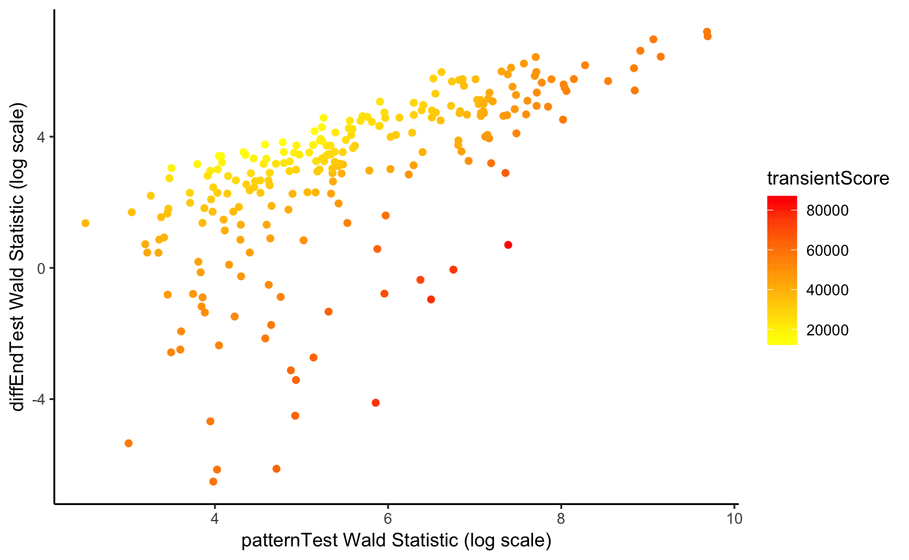
Or, we can visualize the expression in UMAP space of the top gene.
topTransient <- (compare %>% arrange(desc(transientScore)))[1, "Gene"]
plotSmoothers(gamList[[topTransient]])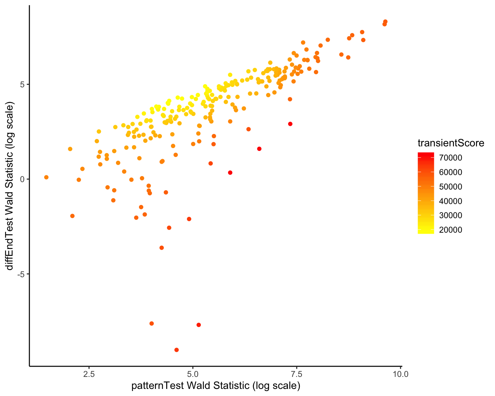
plotGeneCount(rd, crv, counts, gene = topTransient)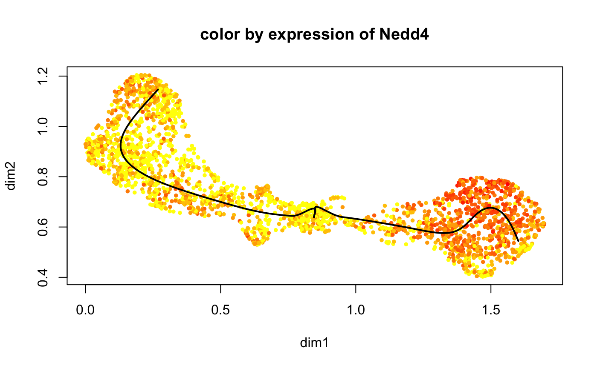
Interestingly, we recover the Irf8 gene in the top 5 genes according to that ranking.
## Gene
## 1 Nedd4
## 2 Mt1
## 3 Mki67
## 4 Irf8
## 5 Hint1We can also plot the Irf8 gene.
plotSmoothers(gamList[["Irf8"]])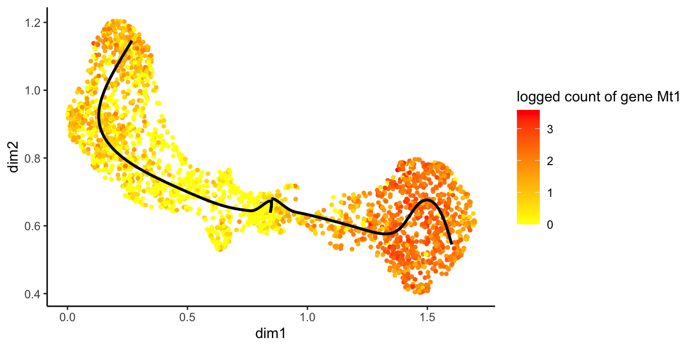
plotGeneCount(rd, crv, counts, gene = "Irf8")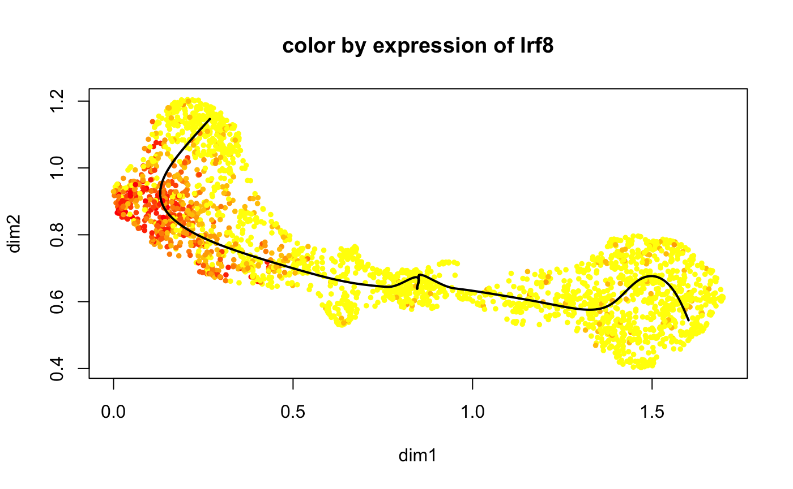
Early drivers of differentiation
Another question of interest is to find a list of genes that are differentially expressed around the separation of two or multiple lineages. The function earlyDETest implements a statistical method to tests the null hypothesis of whether the smoothers are equal between two user-specified knots by building on the patternTest, but restricting itself to a particular location of the smoothers. Again, the knots can be visualized with the plotGeneCount function. By selecting the region covering the first two knot points to test for differential patterns between the lineages, we check which genes are behaving differently around the bifurcation point.
plotGeneCount(rd = rd, curve = crv, counts = counts, clusters = cl,
models = gamList)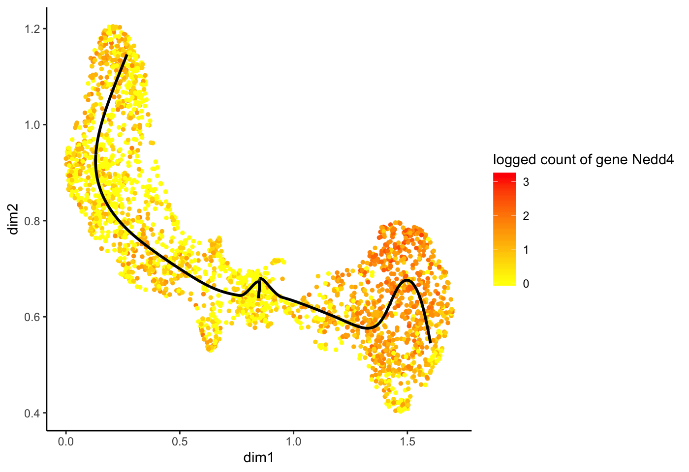
earlyDERes <- earlyDETest(gamList, knots = c(1, 2))
oEarly <- order(earlyDERes$waldStat, decreasing = TRUE)
head(rownames(earlyDERes)[oEarly])## [1] "Alas1" "Car1" "Car2" "Mt1" "Klf1" "Pkm2"plotSmoothers(gamList[[rownames(earlyDERes)[oEarly][2]]])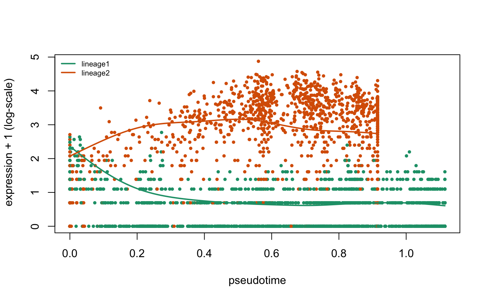
plotGeneCount(rd, crv, counts, gene = rownames(earlyDERes)[oEarly][2])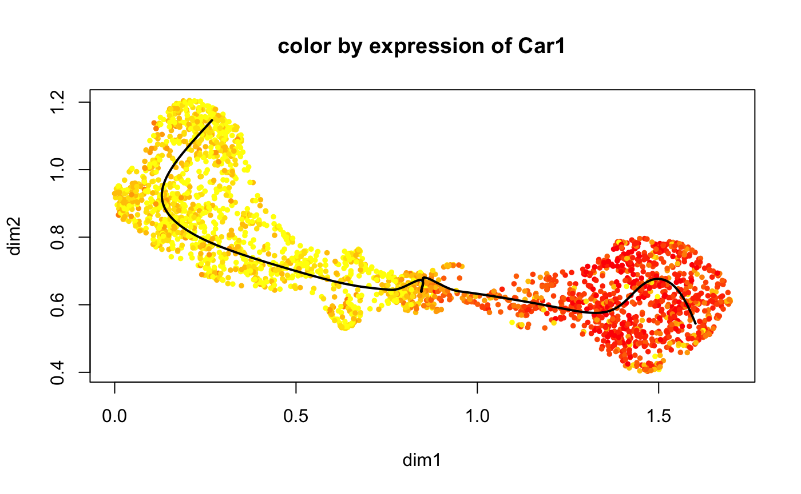
Clustering of genes according to their expression pattern
tradeSeq provides the functionality to cluster genes according to their expression pattern along the lineages with the clusterExpressionPatterns function. A number of equally spaced points for every lineage are selected to perform the clustering, and the number of points can be selected with the nPoints argument. The genes argument specifies which genes you want to cluster (e.g., all genes with differential expression patterns). Here, we use 20 points along each lineage to cluster the first 40 genes in the dataset. The clustering itself occurs with the RSEC package (Risso et al. 2018).
library(clusterExperiment)## Warning: package 'clusterExperiment' was built under R version 3.5.1nPointsClus <- 20
clusPat <- clusterExpressionPatterns(gamList, nPoints=nPointsClus, genes=rownames(counts)[1:40])## Note: Not all of the methods requested in 'reduceMethod' have been calculated. Will calculate all the methods requested (any pre-existing values -- filtering statistics or dimensionality reductions -- with these names will be recalculated and overwritten): PCA.## Note: Merging will be done on ' makeConsensus ', with clustering index 1## Note: merging with these parameters did not result in any clusters being merged.clusterLabels <- primaryCluster(clusPat$rsec)The clusters can be visualized using the normalized expression that the clustering is based upon.
par(mfrow=c(2,2), bty='l')
cUniq <- unique(clusterLabels)
cUniq <- cUniq[!cUniq==-1] #remove unclustered genes
for(xx in cUniq){
cId <- which(clusterLabels==xx)
plot(x=1:nPointsClus,y=rep(range(clusPat$yhatScaled[cId,]),nPointsClus/2), type="n", main=paste0("Cluster ",xx), xlab="Pseudotime", ylab="Normalized expression")
for(ii in 1:length(cId)){
geneId <- rownames(clusPat$yhatScaled)[cId[ii]]
yhatGene <- clusPat$yhatScaled[geneId,]
lines(x=1:nPointsClus, y=yhatGene[1:nPointsClus], col="orange", lwd=2)
lines(x=1:nPointsClus, y=yhatGene[(nPointsClus+1):(2*nPointsClus)], col="darkseagreen3", lwd=2)
}
}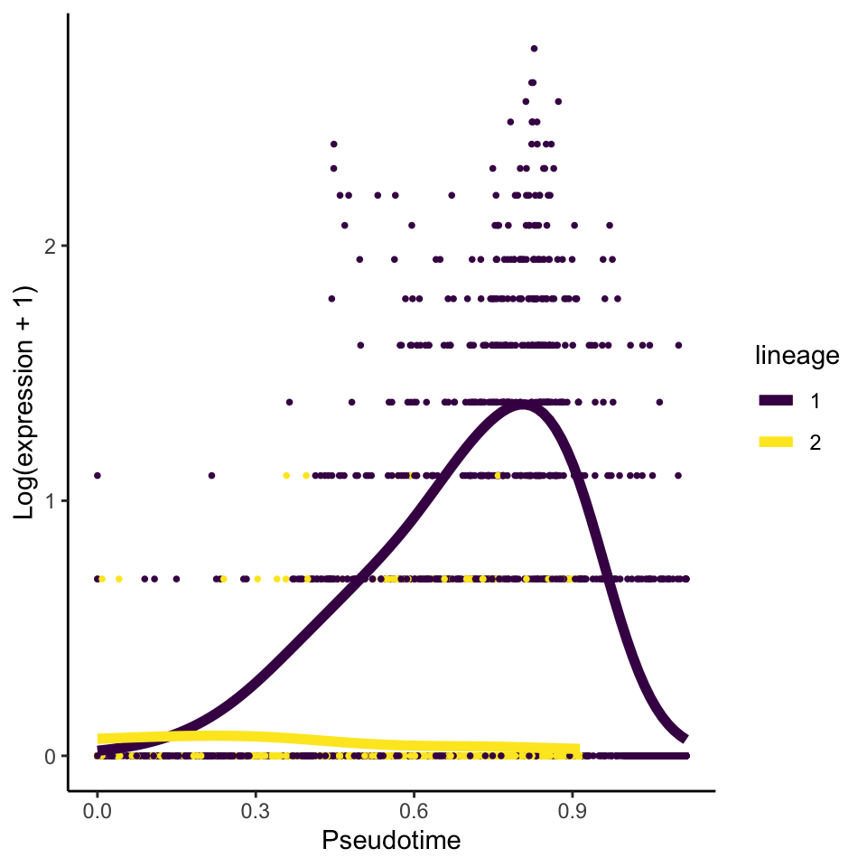
Cheatsheet
To recapitulate the workflow, we have created a cheatsheet that users can refer to when deciding which tests to run.
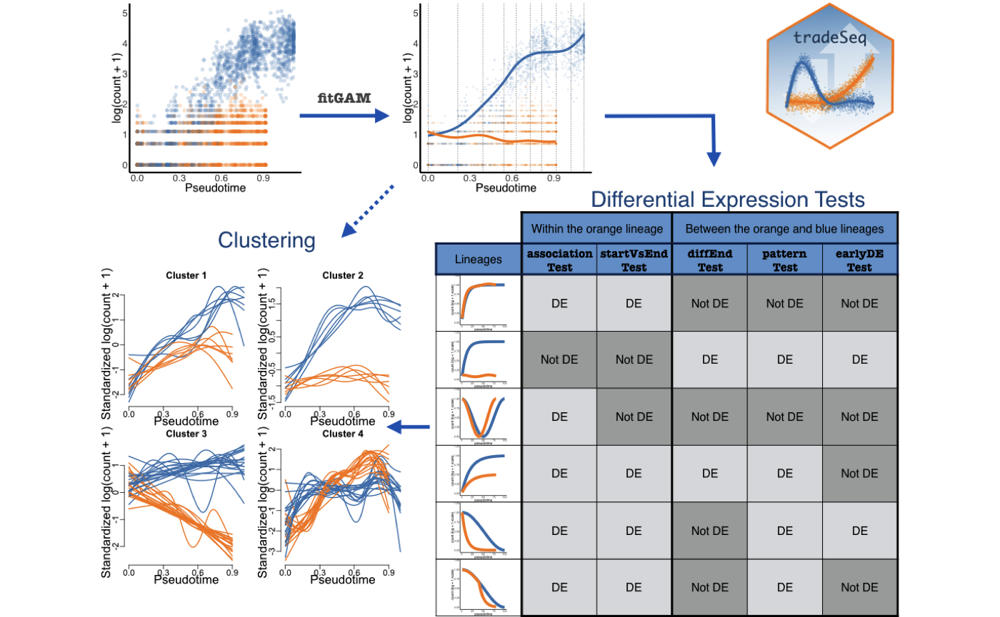
Session
## R version 3.5.0 (2018-04-23)
## Platform: x86_64-apple-darwin15.6.0 (64-bit)
## Running under: macOS 10.14.3
##
## Matrix products: default
## BLAS: /Library/Frameworks/R.framework/Versions/3.5/Resources/lib/libRblas.0.dylib
## LAPACK: /Library/Frameworks/R.framework/Versions/3.5/Resources/lib/libRlapack.dylib
##
## locale:
## [1] en_US.UTF-8/en_US.UTF-8/en_US.UTF-8/C/en_US.UTF-8/en_US.UTF-8
##
## attached base packages:
## [1] parallel stats4 stats graphics grDevices utils datasets
## [8] methods base
##
## other attached packages:
## [1] clusterExperiment_2.2.0 cowplot_0.9.4
## [3] tidyr_0.8.3 ggplot2_3.1.0
## [5] dplyr_0.8.0.1 RColorBrewer_1.1-2
## [7] slingshot_1.0.0 princurve_2.1.3
## [9] tradeSeq_0.9.0 bigmemory_4.5.33
## [11] mgcv_1.8-27 nlme_3.1-137
## [13] SingleCellExperiment_1.4.1 SummarizedExperiment_1.12.0
## [15] DelayedArray_0.8.0 BiocParallel_1.16.6
## [17] matrixStats_0.54.0 Biobase_2.42.0
## [19] GenomicRanges_1.34.0 GenomeInfoDb_1.18.2
## [21] IRanges_2.16.0 S4Vectors_0.20.1
## [23] BiocGenerics_0.28.0
##
## loaded via a namespace (and not attached):
## [1] uuid_0.1-2 backports_1.1.3
## [3] copula_0.999-19 NMF_0.21.0
## [5] igraph_1.2.4 plyr_1.8.4
## [7] lazyeval_0.2.1 splines_3.5.0
## [9] pspline_1.0-18 crosstalk_1.0.0
## [11] rncl_0.8.3 gridBase_0.4-7
## [13] digest_0.6.18 foreach_1.4.4
## [15] htmltools_0.3.6 magick_2.0
## [17] viridis_0.5.1 magrittr_1.5
## [19] memoise_1.1.0 cluster_2.0.7-1
## [21] doParallel_1.0.14 limma_3.38.3
## [23] annotate_1.60.1 stabledist_0.7-1
## [25] pkgdown_1.3.0 prettyunits_1.0.2
## [27] colorspace_1.4-0 blob_1.1.1
## [29] xfun_0.5 jsonlite_1.6
## [31] crayon_1.3.4 RCurl_1.95-4.12
## [33] bigmemory.sri_0.1.3 roxygen2_6.1.1
## [35] genefilter_1.64.0 phylobase_0.8.6
## [37] survival_2.43-3 iterators_1.0.10
## [39] ape_5.2 glue_1.3.0
## [41] registry_0.5-1 gtable_0.2.0
## [43] zlibbioc_1.28.0 XVector_0.22.0
## [45] webshot_0.5.1 kernlab_0.9-27
## [47] Rhdf5lib_1.4.2 HDF5Array_1.10.1
## [49] prabclus_2.2-7 DEoptimR_1.0-8
## [51] scales_1.0.0 mvtnorm_1.0-10
## [53] DBI_1.0.0 edgeR_3.24.3
## [55] rngtools_1.3.1 bibtex_0.4.2
## [57] miniUI_0.1.1.1 Rcpp_1.0.0
## [59] viridisLite_0.3.0 xtable_1.8-3
## [61] progress_1.2.0 bit_1.1-14
## [63] mclust_5.4.2 glmnet_2.0-16
## [65] htmlwidgets_1.3 httr_1.4.0
## [67] fpc_2.1-11.1 modeltools_0.2-22
## [69] pkgconfig_2.0.2 XML_3.98-1.19
## [71] flexmix_2.3-15 nnet_7.3-12
## [73] locfit_1.5-9.1 labeling_0.3
## [75] manipulateWidget_0.10.0 later_0.8.0
## [77] howmany_0.3-1 tidyselect_0.2.5
## [79] rlang_0.3.1 softImpute_1.4
## [81] reshape2_1.4.3 AnnotationDbi_1.44.0
## [83] munsell_0.5.0 tools_3.5.0
## [85] RSQLite_2.1.1 ade4_1.7-13
## [87] evaluate_0.13 stringr_1.4.0
## [89] yaml_2.2.0 knitr_1.22
## [91] bit64_0.9-7 fs_1.2.6
## [93] robustbase_0.93-3 rgl_0.99.16
## [95] purrr_0.3.1 dendextend_1.10.0
## [97] mime_0.6 whisker_0.3-2
## [99] xml2_1.2.0 compiler_3.5.0
## [101] rstudioapi_0.9.0 tibble_2.0.1
## [103] RNeXML_2.3.0 pcaPP_1.9-73
## [105] stringi_1.4.3 gsl_1.9-10.3
## [107] desc_1.2.0 RSpectra_0.13-1
## [109] lattice_0.20-38 trimcluster_0.1-2.1
## [111] Matrix_1.2-16 commonmark_1.7
## [113] pillar_1.3.1 ADGofTest_0.3
## [115] zinbwave_1.4.2 bitops_1.0-6
## [117] httpuv_1.4.5.1 R6_2.4.0
## [119] promises_1.0.1 gridExtra_2.3
## [121] codetools_0.2-16 MASS_7.3-51.1
## [123] assertthat_0.2.0 rhdf5_2.26.2
## [125] pkgmaker_0.27 rprojroot_1.3-2
## [127] withr_2.1.2 GenomeInfoDbData_1.2.0
## [129] locfdr_1.1-8 diptest_0.75-7
## [131] hms_0.4.2 grid_3.5.0
## [133] class_7.3-15 rmarkdown_1.12
## [135] shiny_1.2.0 numDeriv_2016.8-1
## [137] lubridate_1.7.4References
Paul, Franziska, Ya’ara Arkin, Amir Giladi, Diego Adhemar Jaitin, Ephraim Kenigsberg, Hadas Keren-Shaul, Deborah Winter, et al. 2015. “Transcriptional Heterogeneity and Lineage Commitment in Myeloid Progenitors.” Cell 163 (7). Cell Press: 1663–77. doi:10.1016/J.CELL.2015.11.013.
Risso, Davide, Liam Purvis, Russell B. Fletcher, Diya Das, John Ngai, Sandrine Dudoit, and Elizabeth Purdom. 2018. “clusterExperiment and RSEC: A Bioconductor package and framework for clustering of single-cell and other large gene expression datasets.” Edited by Aaron E. Darling. PLOS Computational Biology 14 (9). Public Library of Science: e1006378. doi:10.1371/journal.pcbi.1006378.
Robinson, Mark D, and Alicia Oshlack. 2010. “A scaling normalization method for differential expression analysis of RNA-seq data.” Genome Biology 11 (3). BioMed Central: R25. doi:10.1186/gb-2010-11-3-r25.
Street, Kelly, Davide Risso, Russell B. Fletcher, Diya Das, John Ngai, Nir Yosef, Elizabeth Purdom, and Sandrine Dudoit. 2018. “Slingshot: cell lineage and pseudotime inference for single-cell transcriptomics.” BMC Genomics 19 (1). BioMed Central: 477. doi:10.1186/s12864-018-4772-0.
Van den Berge, Koen, Fanny Perraudeau, Charlotte Soneson, Michael I. Love, Davide Risso, Jean-Philippe Vert, Mark D. Robinson, Sandrine Dudoit, and Lieven Clement. 2018. “Observation weights unlock bulk RNA-seq tools for zero inflation and single-cell applications.” Genome Biology 19 (1). BioMed Central: 24. doi:10.1186/s13059-018-1406-4.